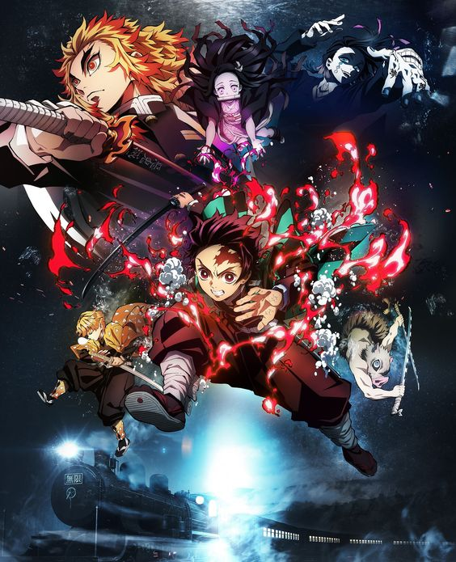
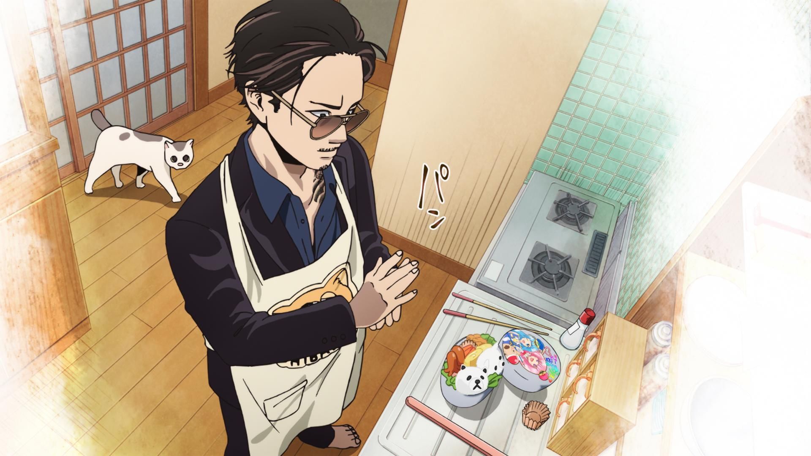

Precio de Animes en Blu-ray
| Anime | Características |
|---|---|
|
Nombre = Jujutu Kaisen Episodios = 24 Precio = $853.01 Uno de los anime más populares del año 2021. Creado por el mangaka Gege Akutami, se trata de un shonen con todos los ingredientes para triunfar: batallas épicas, un nivel de animación increíble, personajes para el recuerdo |
|
|  |
Nombre = Demon Slayer: Kimetsu no Yaiba the Movie: Mugen Train (Pelicula) Precio = $883.98 Después de su entrenamiento de rehabilitación, Tanjiro y sus compañeros comenzaron su próxima misión en el Tren Mugen, donde más de 40 personas han desaparecido. Con uno de los espadas más poderosos, Flame Hashira Kyojuro Rengoku, se enfrenta a la pesadilla a bordo. . |
|  |
Nombre = Gokushufudou - De Yakuza a Amo de Casa Episodios = 10 Precio = $820.20 Su protagonista es Tatsu, un ex-Yakuza muy aclamado que llegó a obtener el apodo de “El Dragón Inmortal”. Tras una serie de acontecimientos, el legendario yakuza abandona esa vida para centrarse en cuidar de su mujer, Miku, y de su gata Gin. |